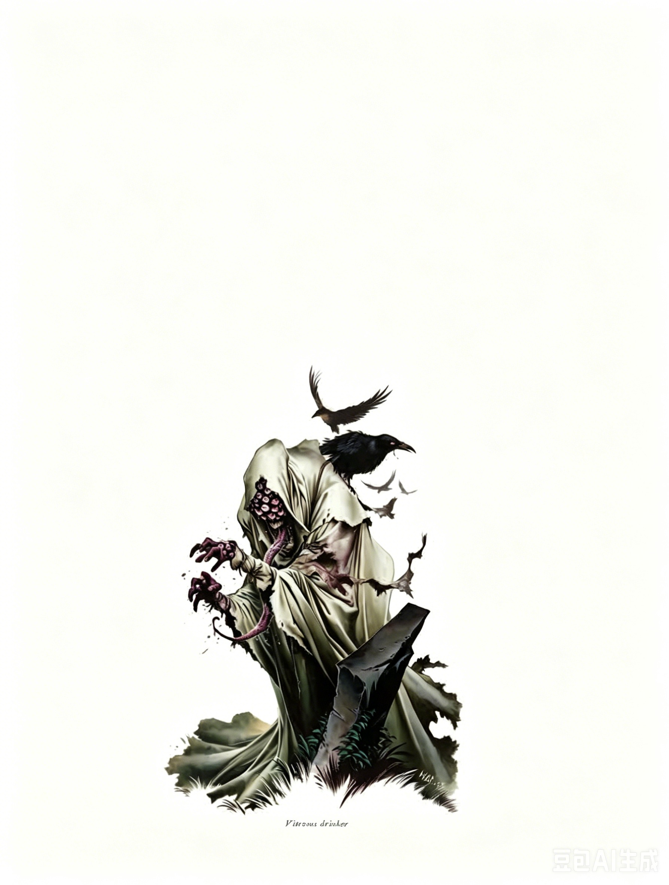

中型不死生物 | 挑战级数 11这弓腰驼背、踉跄而行的身影，若不是遍布皮肤的凸起湿润的眼睛，以及从大张的嘴里垂下的长而恶心的灵活舌头，或许还能伪装成人类。几只半透明的阴影乌鸦围绕它的头颅盘旋，尖喙张开，但却无声地鸣叫。
窃眼者 ―― 始终为中立邪恶（NE）。
| 生命骰 | 14d12（91HP），DR 10/善良 |
| 先攻 | +8 |
| 速度 | 30 英尺 (6格) |
| 防御等级 | 27，接触 17，措手不及 23（+4敏捷，+3偏斜，+10天生） |
| 基本攻击/擒抱 | +7 / +8 |
| 近战攻击 | 舌鞭 +12/+7 (2d4+1 外加窃眼) |
| 占据/触及 | 5 英尺 / 5 英尺 (舌鞭 10 英尺) |
| 特殊攻击 | 窃眼，恐怖凝视 |
| 特殊能力 | 黑暗视觉 120 英尺；免疫：不死生物免疫；抗力：+6 驱散抗力；法术抗力 (SR) 22；幽影渡鸦，不洁优雅 |
| 豁免 | 强韧 +7，反射 +13，意志 +14 |
| 属性 | 力量 12，敏捷 19，体质 ―，智力 18，感知 15，魅力 16 |
| 技能 | 唬骗+10，专注+17，解读文书+17，交涉+17，收集信息+15，威吓+15，知识 (神秘)+14，知识 (地方)+11，知识 (自然)+8，知识 (宗教)+8，知识 (位面)+8，聆听+2，察言观色+12，侦查+19，使用魔法装置+19 (使用卷轴时+21) |
| 专长 | 能力专攻 (摄心目光)，精通先攻，闪电反射，武器娴熟，武器专攻 (舌鞭) |
| 语言 | 深渊语 (Abyssal)，通用语 (Common)，龙语 (Draconic)，炼狱语 (Infernal) |
| 进化 | 15�C20HD (中型)；21�C42HD (大型) |
类法术能力（施法者等级 14级）：
随意施展：秘法眼 (arcane eye)、侦测思想 (detect thoughts, DC 15)、巧言术 (tongues)。
每日3次：摄心目光 (eyebite, DC 21)、吸血鬼之触 (vampiric touch, +11接触)。
每日1次：任意门 (dimension door)、死亡一指 (finger of death, DC 20)。
窃眼 (Eye Drinking, Su)：窃眼者能够通过其挥动的舌头魔法般地夺走目标的视力。这一能力对没有视觉的生物无效。被窃者舌头击中的生物必须通过一次 DC 20 的强韧豁免，否则其眼睛会被厚重、乳白色的白内障覆盖。受影响的生物视野缩短至 60 英尺以内，并且在此范围内进行的所有近战和远程攻击有 20% 的失手率。此效果只能通过高级复原术 (Greater Restoration) 或神迹术 (Miracle) 移除，或者通过消灭夺走视力的窃眼者来解除。豁免 DC 基于魅力调整值。
被夺走视力的生物在抵抗窃眼者的能力及其类法术能力时进行的意志豁免上承受 -4 的减值。并且，受害者无法转移视线来避免窃者的恐怖凝视 (Horrific Gaze)（见下文）。
窃眼者可以通过被夺视者的眼睛观察外界，使用受害者完整、正常的视觉。它不会受到目标所承受的任何视力限制或减值影响。此能力的范围和持续时间没有限制，但窃者一次只能通过一个目标的眼睛观察。窃者使用其自身的侦查 (Spot) 技能来通过目标的眼睛观察细节，并享有其黑暗视觉的优势。
恐怖凝视 (Horrific Gaze, Su)：窃眼者丑陋可憎的外貌即便是最坚定的灵魂也难以承受。窃者的凝视攻击范围为 60 英尺，受影响的生物会因反胃感而无法行动 1 轮。成功通过一次 DC 20 的强韧豁免可以抵消此效果，但只要目标仍在凝视范围内，每轮都必须再次进行豁免。豁免 DC 基于魅力调整值。
幽影渡鸦 (Spectral Ravens, Su)：窃眼者始终伴随着幽影渡鸦，这些渡鸦无条件地为窃者服务。窃者与这些渡鸦共享一种强大的共生联系，能随时感知渡鸦的所见所闻，并可以通过一个自由动作指挥它们。幽影渡鸦是无实体的，窃眼者只要与渡鸦在同一位面，就能控制它们。渡鸦不是生物，而是窃者生成的物体。每只渡鸦拥有 5 点生命值和 15 点 AC，其他特性可视为无人看管的小型物体。窃眼者最多可以伴随 24 只渡鸦，如果渡鸦被摧毁，窃者可以以每天一只的速度恢复它们。幽影渡鸦具有 100 英尺的飞行速度和完美的机动性，但不能独立行动，也无法对物理世界产生影响。它们的存在目的仅为观察。
不洁优雅 (Unholy Grace, Su)：窃眼者将其魅力调整值加成到其豁免检定和偏斜 AC 上（如上文所示）。
窃眼者是一种可怕的不死生物，利用视觉窃取和操控受害者的感官，辅以恐怖的法术能力和幽影渡鸦进行猎杀。
窃眼者是一种可怕的不死生物，效忠于维克纳 (Vecna)。这种生物通过窃取猎物的视力使其部分失明，而最恐怖的是，窃眼者能够通过受害者的眼睛观察外界。作为维克纳的仆从，窃眼者利用这一能力从学者、法师和其他智者手中窃取秘密。它所积累的知识成为一种强大的武器，与其致命的魔法和物理能力一样危险。
策略与战术：窃眼者通常隐匿于城镇、城市或其他文明区域，利用其窃眼能力影响范围内的动物和人类。一只窃眼者可能在整个城市中伏击乞丐，窃取他们的视力。受害者无意间成为窃者的哨兵，形成一个随时可被利用的活体间谍网络。一个精明的窃眼者可以通过这个网络跟踪冒险小队或其他目标在城镇中的一举一动。如果某个目标进入它没有间谍的区域，窃眼者会派出幽影渡鸦尾随目标。
作为间谍、渗透者和情报贩子，窃眼者避免直接冲突，除非这样做符合它的利益。它更喜欢通过伏击使用窃眼能力，然后撤退，利用受害者监视其盟友或队伍。凭借出色的察看技能，窃眼者还能通过受害者的眼睛读唇语，进一步获取信息。
在大多数情况下，窃眼者与维克纳的强大牧师合作。一只窃眼者可能是庞大间谍网络的核心，负责收集情报以推进其目标。有些窃眼者试图破坏地区稳定，削弱政府和机构，为混乱的浪潮铺平道路。另一些则通过传递情报或骚扰敌人来协助邪恶组织实现目标。
当拥有强大盟友时，窃眼者最为危险。例如，它可能与刺客公会合作，协助制定计划击杀圣武士、善良神职人员或其他英雄人物。
在战斗中，窃眼者会尽量避免直接交战，除非被逼到绝境或确信能取胜。它通常会在战斗初期施展死亡一指 (finger of death)，优先攻击看起来脆弱的敌人 (如奥术施法者或潜行者)，随后使用摄心目光 (eyebite) 削弱敌人，并通过吸血鬼之触 (vampiric touch) 汲取敌人的力量，同时增强自身以抵御反击。如果形势不利，它会将任意门 (dimension door) 作为最后的逃生手段。
当窃眼者主动出击时，它更倾向于采用游击战术，攻击后迅速撤退。它通常尝试通过窃眼能力打击受害者，然后观察敌人以了解他们的战术，从而策划下一步行动。
单独行动 (EL 11)：一只窃眼者利用幽影渡鸦追踪冒险小队的动向。在数日间，它会攻击附近的乞丐和其他可怜人，以窃取他们的视力。一旦掌握了足够多的情报，它会计划伏击队伍中最弱的成员。即使如此，它仍避免正面战斗，而是使用邪眼术扰乱目标，然后窃取其视力。
窃眼者的存在不仅是物理上的威胁，更是心理上的恐惧，其策略性、隐秘性以及对信息的掌控使它成为冒险者的噩梦。
生态学：作为不死生物，窃眼者没有真正的生态体系。这些生物据传是由维克纳 (Vecna) 为某种邪恶目的而创造的。一些传说认为，维克纳实际上直接指导每一位窃眼者的行动，以实现某种未知的目标。在无数的世界和无限的位面中，窃眼者彼此协作，共同推进维克纳不可预测的计划。
环境：窃眼者可以出现在任何气候和地形中。犯罪率高的城市贫民窟、停尸房以及战场是常见的发现地点，但只要死亡占据一席之地，它们都可能出现。
典型物理特征：窃眼者是双足行走的人形生物，身高约 6 英尺，体重约 150 磅。它们的身体无性别特征，作为不死生物，它们不会衰老。
阵营：窃眼者始终为中立邪恶，这一特征与其与维克纳的紧密联系相符合。
社会：窃眼者通常独居。由于它们的能力更适合广泛而分散的行动，它们很少合作。然而，它们会与维克纳的神职人员合作，并将所收集的信息传递给任何能够帮助它们实现神秘目标的人。不管是兽人酋长还是勇敢的圣武士，只要窃眼者认为对方能以有利于自己目的的方式利用信息，它们都会将信息提供给对方。在特定情况下，冒险者团队甚至可能在不知情的情况下为维克纳效力。
通常，窃眼者会有一些人形盟友，这些盟友负责将信息从窃眼者那里传递给其他人，再逐级传递到维克纳的高层凡人代表处。
窃眼者的财宝与其挑战等级相符，约为 7,500 金币。这些财富通常以贿赂或工具的形式存在。窃眼者的财宝多以卷轴和魔杖为主，用于对敌人发动意想不到的魔法攻击。
拥有 宗教知识 (Knowledge: Religion) 的角色可以了解更多关于窃眼者的信息。成功的技能检定会揭示以下内容，包括更低 DC 的相关信息。
DC 21：这种生物是窃眼者，一种不死生物，它能从受害者身上窃取视力。这一结果揭示了所有不死生物的特性。
DC 26：窃眼者可以使用摄心目光 (eyebite)、吸血鬼之触 (vampiric touch) 以及死亡一指 (finger of death) 作为类法术能力。
DC 31：幽影渡鸦伴随着窃眼者出现，它们是其负能量活化的体现。窃眼者可以通过幽影渡鸦看到它们的所见。
DC 36：窃眼者可以通过它们受害者的眼睛观察外界。